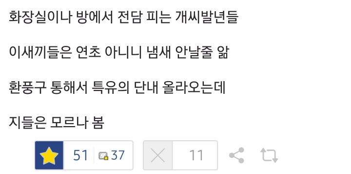
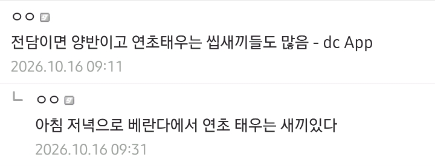
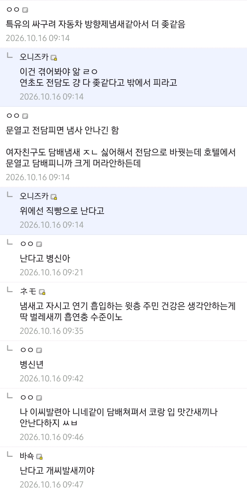

목욕탕 환풍구로 <미궁> 틀면 뭐 오또케 잡아낼 건덲ㄲㄲㄲㄲㄲㄲㄲㄲㄲㄲㄲㄲㄲㄲㄲㄲㄲㄲㄲㄲㄲㄲㄲㄲ
액상전담 피는데 키스할때 민트향 나서 좋다고는 해...
집 안에서 피는건 본인 권리라 당하는 사람이 방법을 찾아야 할듯. 안 씻고 존나 냄새나는 군대 선임이랑 비슷한 상황
출출해서 방 환풍기 돌려놓고 부엌에 가서 바나나 먹고 방으로 돌아왔더니
방 안이 담배 냄새로 꽉 차있더라
이웃 잘못만나면 주거환경 쓰레기됨
전담 냄새가 나긴 하는데 그건 들어가있는 향료 냄새 아닌가?
집에 담배피우는 가족있는데 전담으로 바꾼 다음부터는 공기 깨끗해져서 존나 좋은데.
그냥 수증기만 나오더만.
ㅋㅋㅋ이런새2끼들 특 꼭 인터넷엔 없음
담배전자 아니고 전자담배다 ㄱㅈㄱㅇㅅㄲ들아
흡연충 개새끼들 진짜
진짜 전담피는새끼들 코 맛가서 냄새 하나도 안나는데?
ㅇㅈㄹ하는게 코미디임
비흡연자입장에선 ㅈ같은 인공적인 향 쥰내게 나는데
길빵도 법적으로 금지 시켜야 한다고 봄
창문 열면 엄청 들어옴
전담 피는놈들이 더 빡돌게해
난 그래서 향 아얘 없는걸로 핌
걍 목 넘기는 느낌만 즐기고 공허함
다른 흡연자들은 아무 향도 없는걸 왜 피냐고 하긴 함
이런 게시글 볼때마다 금연해서 뿌듯하고 한참 필때 길거리에서 길빵,꽁초 무단 투기했던 옛날 민폐가 생각나서 이불킥함...
화장실도아니고 방에서 피는 전담이 환풍구타고가서 다른집까지 냄새난다고?? 걍 니가 개코해라ㅋㅋㅋㅋㅋ
ㄹㅇㅋㅋ
전담피는새끼들은 진짜 냄새 안난다고 생각했구나 ㅋㅋㅋ
좃도 이기적인거 개패버리고싶네 ㅋㅋㅋㅋ
이쉑히들 코가 얼마나 좋은거냐 ㄷㄷㄷ
길빵이나 바로 옆 전담은 당연히 나는데
집안에서 핀 것이 윗집까지 간다고? ㅋㅋㅋㅋ
난다고 씨발새끼들아 옆동네 넘어가서 피고와 씹색기들아
개같은놈들 대체 왜 내가 내 공간에서 담배 냄새를 맡아야 하는지 이해할 수가 없음
밖에 돌아다니다가 담배냄새 나는 것도 개 빡치는데 집에서 맡으면 진짜 자동으로 창문에 대고 소리 지르게 됨
히히 저도 방에서 겜하면서 피움 지송
액상형은 창문에 대고 피는거 아니면 못올라감
연기가 아니고 수증기라 환풍구 통하는 동안 다 액화됨
환풍구 타고 액상전담냄새 난다는 새끼들은 망상증 환자라 보면 됨
길가다 전담 수증기 얼굴에 맞았는데 연초냄새 대신 과일향 나니까 화풀이 망상글 쓰는거임